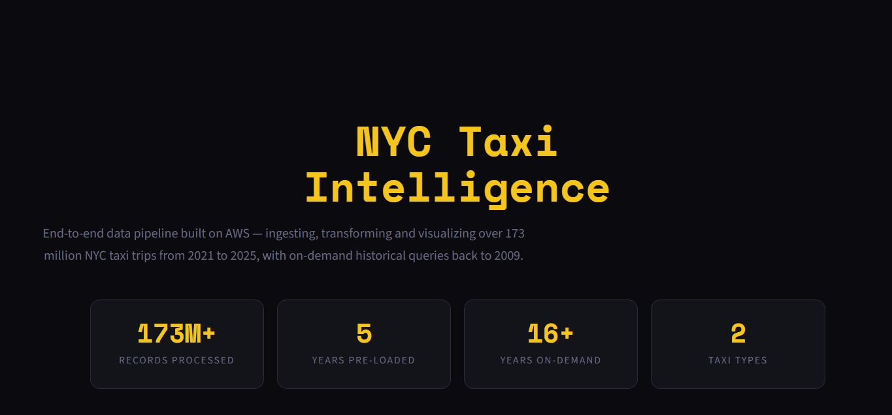
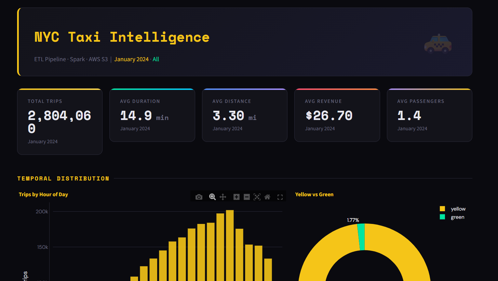
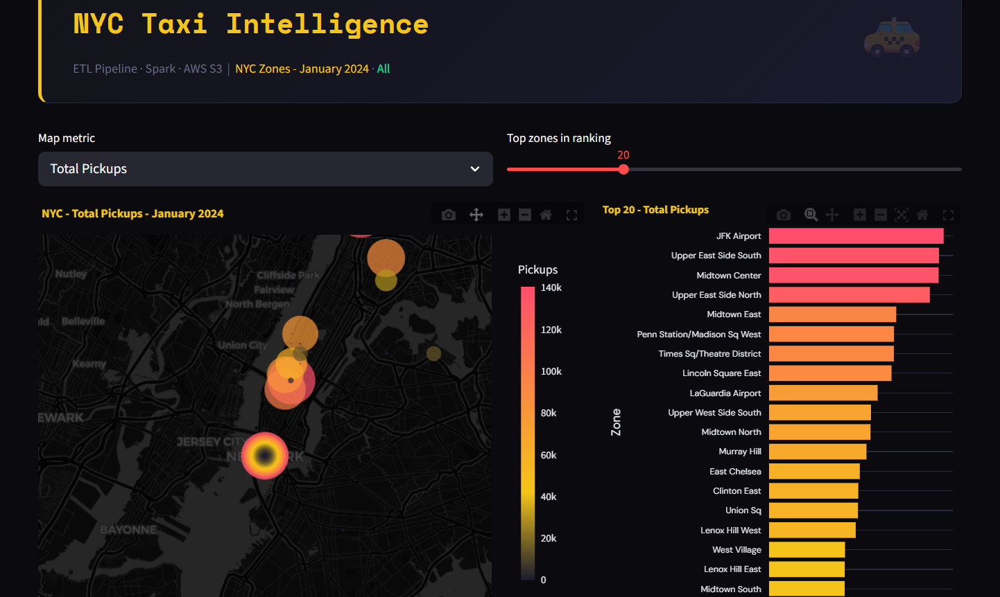
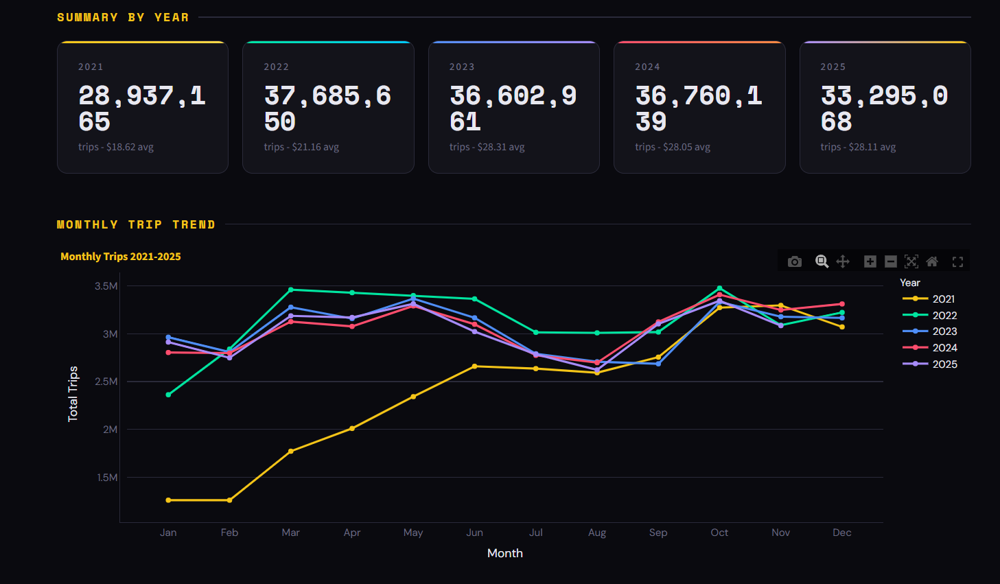
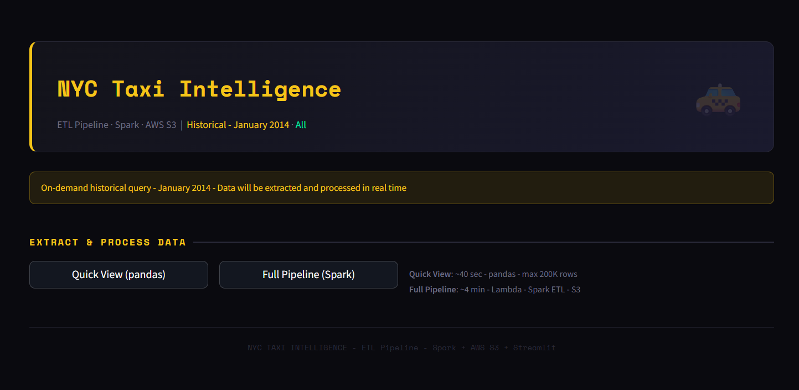

Architecture
System Architecture
The complete AWS pipeline: NYC TLC data is ingested via Lambda into S3 raw storage, transformed by Apache Spark on EC2, and served through a Streamlit dashboard. RDS stores pipeline metadata, and GitHub Actions CI/CD automates deployments.

Home

Landing Page
The main entry point of the dashboard. Displays key project metrics — 173M+ processed records, 5 years of pre-loaded data, and the complete tech stack powering the pipeline. Dark theme with Space Mono typography.
Monthly Dashboard

Monthly Analytics
Deep dive into any month from 2021–2025. KPI cards for total trips, avg duration, distance, revenue, and passengers. Hourly distribution, Yellow vs Green breakdown, payment methods, and distance-revenue scatter.
Zone Map

Interactive NYC Map
Scatter map of NYC taxi zones on Mapbox dark tiles. Four metrics: Total Pickups, Total Dropoffs, Avg Revenue, Avg Distance. Zones sized and colored by activity, with ranked bar chart alongside.
Annual Comparison

Year-over-Year Trends
Comparative analysis 2021–2025. Monthly trip volume trends, avg revenue and distance evolution, total trips per year. Highlights post-pandemic recovery and seasonal patterns.
Historical Query

On-Demand Extraction
Query any month 2009–2020 in real time. Quick View with pandas (~40s, 200K sample) or Full Pipeline with Spark (~4-9 min, full ETL). Auto schema detection for 16+ years of evolving data formats.